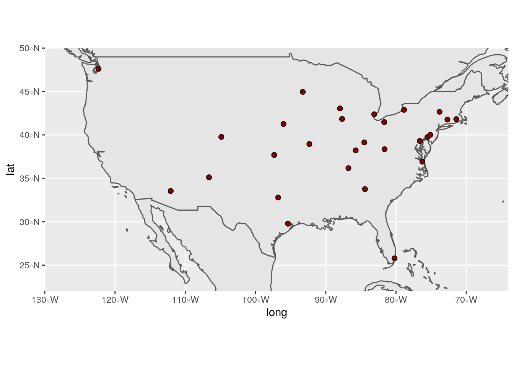
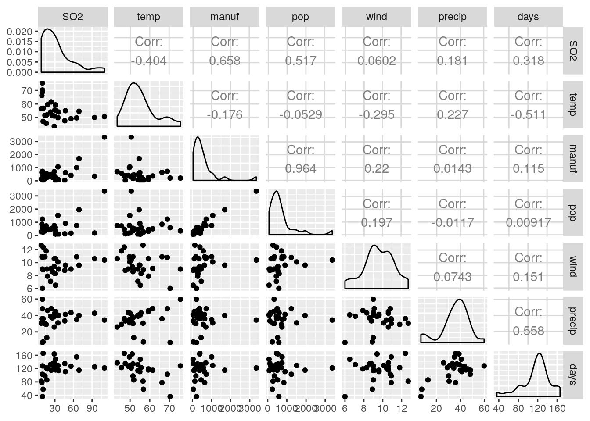
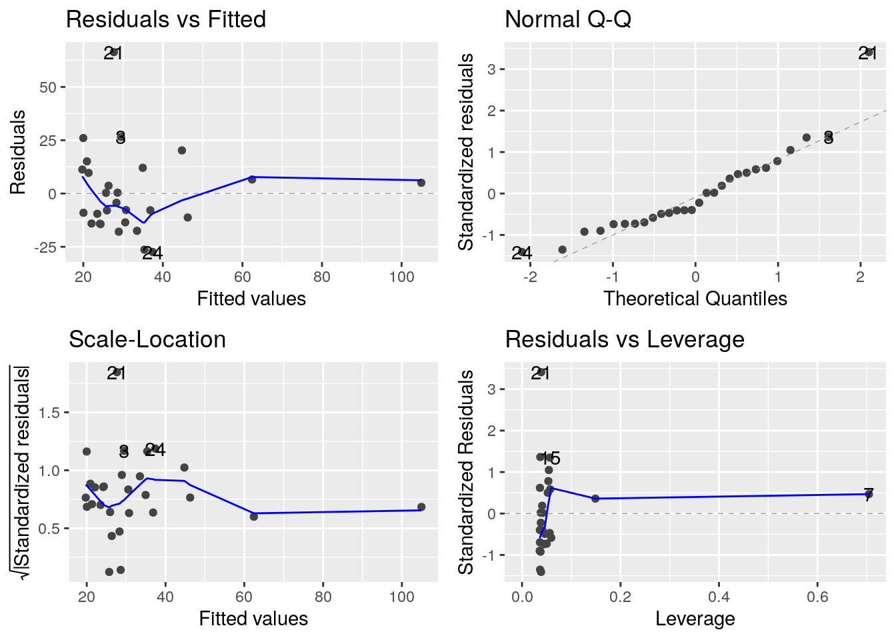
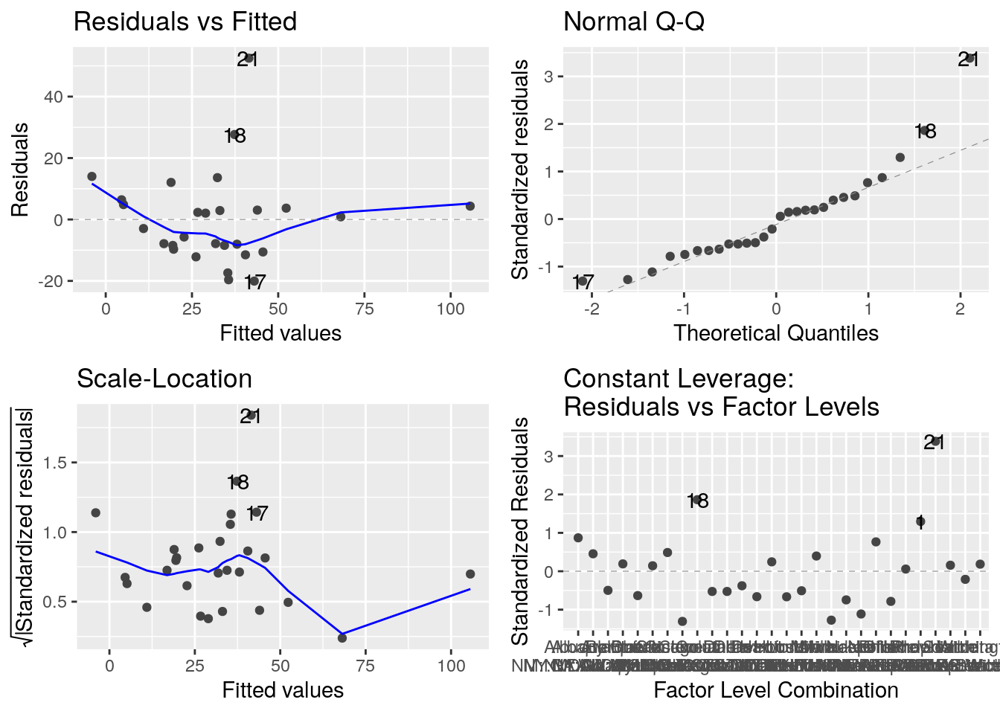

## Linking to GEOS 3.6.2, GDAL 2.2.3, PROJ 4.9.3##
## Attaching package: 'maps'## The following object is masked from 'package:purrr':
##
## mapPour étudier la pollution dans des villes américaine, on a mesuré différentes variables. Les valeurs présentées sont les moyennes annuelles des années 1969 à 1971.\ SO2 : Dyoxide de soufre augmente les risques de pluies acides\ temp : temperature \ manuf : nbre de societe employant plus de 20 salariés \ pop : population en milliers \ wind : vitesse moyenne du vent annuel en miles/Heure \ precip hauteur de precipitations annuelles en pouces \ days : nbre de jours de precipitations \
Chargement des données
usdata <- read.table("data/USAIR2.DAT",
skip = 8,
header = T,
sep = ";")
usdata <- usdata %>%
mutate(City = as.character(City))
head(usdata)## City SO2 temp manuf pop wind precip days
## 1 Phoenix 10 70.3 213 582 6.0 7.05 36
## 2 Little rock 13 61.0 91 132 8.2 48.52 100
## 3 San Francisco 12 56.7 453 716 8.7 20.66 67
## 4 Denver 17 51.9 454 515 9.0 12.95 86
## 5 Hartford 56 49.1 412 158 9.0 43.37 127
## 6 Wilmington 36 54.0 80 80 9.0 40.25 114## [1] "Abilene TX" "Akron OH" "Alameda CA" "Albany GA" "Albany NY"
## [6] "Albany OR"##indices of studied cities in us.cities
ind.cities <- c(694, 509, 802, 247, 387, 990, 944, 429, 559, 41,
173, 422, 248, 988, 522, 609, 55, 250, 568, 443,
785, 650, 7, 5, 126, 180, 185, 195, 693, 700, 726,
549, 601, 225, 413, 794, 619, 753, 834, 165, 567)
sites <- us.cities[ind.cities,]
sites %>%
select(-pop) %>%
mutate(City = str_replace(name, pattern = " [:upper:]+", '')) -> sites
usdata <- inner_join(sites, usdata)## Joining, by = "City"world <- ne_countries(scale = "medium", returnclass = "sf")
ggplot(data = world) +
geom_sf() +
geom_point(data = usdata, aes(x = long, y = lat),
size = 2,
shape = 21, fill = "darkred") +
coord_sf(xlim = c(-130, -64), ylim = c(22, 50), expand = FALSE)
## lat long capital SO2 temp manuf pop wind
## 1 38.81321 -87.89321 0.5714286 32.67857 55.075 536.7857 670.1071 9.589286
## precip days
## 1 35.80929 117.1071## lat long capital SO2 temp manuf pop wind
## 1 4.668694 12.62063 0.9200874 25.84864 7.649237 660.6569 680.2505 1.609541
## precip days
## 1 11.72057 29.27689
world <- ne_countries(scale = "medium", returnclass = "sf")
ggplot(data = world) +
geom_sf() +
geom_point(data = usdata, aes(x = long, y = lat, size = log(SO2)),
shape = 21) +
coord_sf(xlim = c(-130, -64), ylim = c(22, 50), expand = FALSE) + theme(legend.position = 'bottom') + scale_fill_gradient(low="blue", high="red") +
labs( size="log(SO2)")The size of the dots depends on the SO2 value and the color as well.
world <- ne_countries(scale = "medium", returnclass = "sf")
ggplot(data = world) +
geom_sf() +
geom_point(data = usdata, aes(x = long, y = lat, fill = manuf, size = log(SO2)),
shape = 21) +
coord_sf(xlim = c(-130, -64), ylim = c(22, 50), expand = FALSE) + theme(legend.position = "bottom") + scale_fill_viridis_c() +
labs( size="log(SO2)", fill = "Nombre d'usines")The size of the dots depends on the SO2 value and the color on the manuf variables value.
##regression SO2 en fonction de manuf
Le SO2 en fonction du nombre d’entreprises.
## (Intercept) manuf
## 1 1 213
## 2 1 454
## 3 1 412
## 4 1 80
## 5 1 207
## 6 1 368
## 7 1 3344
## 8 1 125
## 9 1 291
## 10 1 625
## 11 1 1064
## 12 1 699
## 13 1 181
## 14 1 46
## 15 1 44
## 16 1 391
## 17 1 462
## 18 1 1007
## 19 1 266
## 20 1 1692
## 21 1 343
## 22 1 275
## 23 1 641
## 24 1 721
## 25 1 96
## 26 1 379
## 27 1 35
## 28 1 569
## attr(,"assign")
## [1] 0 1##
## Call:
## lm(formula = SO2 ~ manuf, data = usdata)
##
## Residuals:
## Min 1Q Median 3Q Max
## -27.422 -13.679 -6.043 10.064 66.311
##
## Coefficients:
## Estimate Std. Error t value Pr(>|t|)
## (Intercept) 18.857158 4.864747 3.876 0.000645 ***
## manuf 0.025748 0.005777 4.457 0.000141 ***
## ---
## Signif. codes: 0 '***' 0.001 '**' 0.01 '*' 0.05 '.' 0.1 ' ' 1
##
## Residual standard error: 19.83 on 26 degrees of freedom
## Multiple R-squared: 0.4331, Adjusted R-squared: 0.4113
## F-statistic: 19.86 on 1 and 26 DF, p-value: 0.000141Comparaison modèle nul et modèle incluant le nombre d’usines
## Analysis of Variance Table
##
## Model 1: SO2 ~ 1
## Model 2: SO2 ~ manuf
## Res.Df RSS Df Sum of Sq F Pr(>F)
## 1 27 18040
## 2 26 10227 1 7813 19.863 0.000141 ***
## ---
## Signif. codes: 0 '***' 0.001 '**' 0.01 '*' 0.05 '.' 0.1 ' ' 1Valeur des paramètres estimés et tests sur les paramètres :
##
## Call:
## lm(formula = SO2 ~ manuf, data = usdata)
##
## Residuals:
## Min 1Q Median 3Q Max
## -27.422 -13.679 -6.043 10.064 66.311
##
## Coefficients:
## Estimate Std. Error t value Pr(>|t|)
## (Intercept) 18.857158 4.864747 3.876 0.000645 ***
## manuf 0.025748 0.005777 4.457 0.000141 ***
## ---
## Signif. codes: 0 '***' 0.001 '**' 0.01 '*' 0.05 '.' 0.1 ' ' 1
##
## Residual standard error: 19.83 on 26 degrees of freedom
## Multiple R-squared: 0.4331, Adjusted R-squared: 0.4113
## F-statistic: 19.86 on 1 and 26 DF, p-value: 0.000141
## [1] 2## [1] 0.07142857Graphiques de diagnostics
Les différents graphiques de diagnostic fournis par R
Effet de la ville de chicago
usdata %>% mutate(id = rownames(usdata)) %>% filter(id != 'Chicago') -> usdata_sans_chicago
lm_sans_chicago <- lm(SO2 ~ manuf , data = usdata_sans_chicago)
summary(lm_sans_chicago)##
## Call:
## lm(formula = SO2 ~ manuf, data = usdata_sans_chicago)
##
## Residuals:
## Min 1Q Median 3Q Max
## -27.422 -13.679 -6.043 10.064 66.311
##
## Coefficients:
## Estimate Std. Error t value Pr(>|t|)
## (Intercept) 18.857158 4.864747 3.876 0.000645 ***
## manuf 0.025748 0.005777 4.457 0.000141 ***
## ---
## Signif. codes: 0 '***' 0.001 '**' 0.01 '*' 0.05 '.' 0.1 ' ' 1
##
## Residual standard error: 19.83 on 26 degrees of freedom
## Multiple R-squared: 0.4331, Adjusted R-squared: 0.4113
## F-statistic: 19.86 on 1 and 26 DF, p-value: 0.000141Mise en oeuvre de la régression multiple :
us.lm2 <- lm(SO2 ~ temp + manuf + wind + precip + days, data = usdata)
## test de type I
anova(us.lm2)## Analysis of Variance Table
##
## Response: SO2
## Df Sum Sq Mean Sq F value Pr(>F)
## temp 1 2939.4 2939.4 10.5638 0.00367 **
## manuf 1 6417.5 6417.5 23.0635 8.51e-05 ***
## wind 1 529.0 529.0 1.9010 0.18182
## precip 1 1361.2 1361.2 4.8919 0.03767 *
## days 1 671.4 671.4 2.4128 0.13461
## Residuals 22 6121.6 278.3
## ---
## Signif. codes: 0 '***' 0.001 '**' 0.01 '*' 0.05 '.' 0.1 ' ' 1## Anova Table (Type II tests)
##
## Response: SO2
## Sum Sq Df F value Pr(>F)
## temp 2739.4 1 9.8449 0.004784 **
## manuf 6730.1 1 24.1867 6.427e-05 ***
## wind 1077.8 1 3.8734 0.061787 .
## precip 1807.1 1 6.4944 0.018317 *
## days 671.4 1 2.4128 0.134613
## Residuals 6121.6 22
## ---
## Signif. codes: 0 '***' 0.001 '**' 0.01 '*' 0.05 '.' 0.1 ' ' 1
Les valeurs estimées des paramètres
##
## Call:
## lm(formula = SO2 ~ temp + manuf + wind + precip + days, data = usdata)
##
## Residuals:
## Min 1Q Median 3Q Max
## -20.058 -8.758 -1.047 4.467 52.507
##
## Coefficients:
## Estimate Std. Error t value Pr(>|t|)
## (Intercept) 185.97504 60.38787 3.080 0.00548 **
## temp -2.35969 0.75206 -3.138 0.00478 **
## manuf 0.02469 0.00502 4.918 6.43e-05 ***
## wind -4.31314 2.19153 -1.968 0.06179 .
## precip 1.25036 0.49064 2.548 0.01832 *
## days -0.34159 0.21990 -1.553 0.13461
## ---
## Signif. codes: 0 '***' 0.001 '**' 0.01 '*' 0.05 '.' 0.1 ' ' 1
##
## Residual standard error: 16.68 on 22 degrees of freedom
## Multiple R-squared: 0.6607, Adjusted R-squared: 0.5835
## F-statistic: 8.567 on 5 and 22 DF, p-value: 0.0001267Sélection de variables backward : {
## Start: AIC=162.85
## SO2 ~ temp + manuf + wind + precip + days
##
## Df Sum of Sq RSS AIC
## <none> 6121.6 162.85
## - days 1 671.4 6793.0 163.76
## - wind 1 1077.8 7199.4 165.39
## - precip 1 1807.1 7928.7 168.09
## - temp 1 2739.4 8861.0 171.20
## - manuf 1 6730.1 12851.7 181.61Sélection de variables forward :
stepus.forward <- step(lm(SO2~1,data=usdata), scope=~temp+pop+manuf+wind+precip+days
, direction="forward")## Start: AIC=183.11
## SO2 ~ 1
##
## Df Sum of Sq RSS AIC
## + manuf 1 7813.0 10227 169.22
## + pop 1 4817.1 13223 176.41
## + temp 1 2939.4 15101 180.13
## + days 1 1827.9 16212 182.12
## <none> 18040 183.11
## + precip 1 594.1 17446 184.17
## + wind 1 65.3 17975 185.01
##
## Step: AIC=169.22
## SO2 ~ manuf
##
## Df Sum of Sq RSS AIC
## + pop 1 3597.9 6629.2 159.08
## + temp 1 1543.9 8683.2 166.63
## + days 1 1075.5 9151.5 168.10
## <none> 10227.1 169.22
## + precip 1 534.2 9692.8 169.71
## + wind 1 136.1 10091.0 170.84
##
## Step: AIC=159.08
## SO2 ~ manuf + pop
##
## Df Sum of Sq RSS AIC
## <none> 6629.2 159.08
## + precip 1 302.95 6326.3 159.77
## + wind 1 232.01 6397.2 160.08
## + temp 1 192.62 6436.6 160.25
## + days 1 106.51 6522.7 160.62Sélection de variables stepwise :
## Start: AIC=162.85
## SO2 ~ temp + manuf + wind + precip + days
##
## Df Sum of Sq RSS AIC
## <none> 6121.6 162.85
## - days 1 671.4 6793.0 163.76
## - wind 1 1077.8 7199.4 165.39
## - precip 1 1807.1 7928.7 168.09
## - temp 1 2739.4 8861.0 171.20
## - manuf 1 6730.1 12851.7 181.61Test sur le modèle sélectionné par la procédure
##
## Call:
## lm(formula = SO2 ~ temp + manuf + pop + wind + precip, data = usdata)
##
## Residuals:
## Min 1Q Median 3Q Max
## -24.568 -9.877 -0.007 4.942 47.822
##
## Coefficients:
## Estimate Std. Error t value Pr(>|t|)
## (Intercept) 84.56908 35.16231 2.405 0.02502 *
## temp -0.84103 0.49267 -1.707 0.10188
## manuf 0.07234 0.02013 3.594 0.00161 **
## pop -0.04709 0.01931 -2.439 0.02327 *
## wind -3.07932 2.01586 -1.528 0.14088
## precip 0.46595 0.27440 1.698 0.10359
## ---
## Signif. codes: 0 '***' 0.001 '**' 0.01 '*' 0.05 '.' 0.1 ' ' 1
##
## Residual standard error: 15.59 on 22 degrees of freedom
## Multiple R-squared: 0.7036, Adjusted R-squared: 0.6362
## F-statistic: 10.44 on 5 and 22 DF, p-value: 3.111e-05##
## Call:
## lm(formula = SO2 ~ temp + manuf + pop + precip, data = usdata)
##
## Residuals:
## Min 1Q Median 3Q Max
## -26.241 -10.353 -0.657 6.450 45.185
##
## Coefficients:
## Estimate Std. Error t value Pr(>|t|)
## (Intercept) 45.87841 25.08654 1.829 0.08043 .
## temp -0.61030 0.48234 -1.265 0.21844
## manuf 0.07433 0.02066 3.598 0.00152 **
## pop -0.05028 0.01975 -2.546 0.01806 *
## precip 0.39658 0.27835 1.425 0.16765
## ---
## Signif. codes: 0 '***' 0.001 '**' 0.01 '*' 0.05 '.' 0.1 ' ' 1
##
## Residual standard error: 16.04 on 23 degrees of freedom
## Multiple R-squared: 0.6721, Adjusted R-squared: 0.6151
## F-statistic: 11.79 on 4 and 23 DF, p-value: 2.352e-05##
## Call:
## lm(formula = SO2 ~ temp + manuf + pop, data = usdata)
##
## Residuals:
## Min 1Q Median 3Q Max
## -24.746 -10.357 -0.267 6.538 47.182
##
## Coefficients:
## Estimate Std. Error t value Pr(>|t|)
## (Intercept) 48.92559 25.52591 1.917 0.06726 .
## temp -0.39680 0.46821 -0.847 0.40510
## manuf 0.08133 0.02049 3.969 0.00057 ***
## pop -0.05678 0.01962 -2.894 0.00797 **
## ---
## Signif. codes: 0 '***' 0.001 '**' 0.01 '*' 0.05 '.' 0.1 ' ' 1
##
## Residual standard error: 16.38 on 24 degrees of freedom
## Multiple R-squared: 0.6432, Adjusted R-squared: 0.5986
## F-statistic: 14.42 on 3 and 24 DF, p-value: 1.404e-05##
## Call:
## lm(formula = SO2 ~ manuf + pop, data = usdata)
##
## Residuals:
## Min 1Q Median 3Q Max
## -21.929 -13.158 -1.843 9.222 47.126
##
## Coefficients:
## Estimate Std. Error t value Pr(>|t|)
## (Intercept) 27.65985 4.65455 5.943 3.34e-06 ***
## manuf 0.08954 0.01796 4.987 3.86e-05 ***
## pop -0.06424 0.01744 -3.684 0.00111 **
## ---
## Signif. codes: 0 '***' 0.001 '**' 0.01 '*' 0.05 '.' 0.1 ' ' 1
##
## Residual standard error: 16.28 on 25 degrees of freedom
## Multiple R-squared: 0.6325, Adjusted R-squared: 0.6031
## F-statistic: 21.52 on 2 and 25 DF, p-value: 3.675e-06